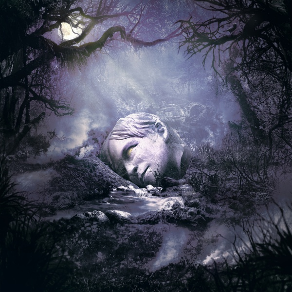

<!DOCTYPE html>
<html>
    <style>
        html {background-image: linear-gradient(rgb(0, 0, 0), rgb(255, 255, 255))}
        html {height: 100%}
        body {font-family: 'Times New Roman', Times, serif; color: lightblue;}

        .grid-container {
  display: grid;
  grid-template-columns: auto auto auto;
  background-color: transparent;
  padding: 10px;
}
.grid-item {
  background-color: transparent;
  padding: 1px;
  font-size: 10px;
  text-align: center;
}
    </style>
    <head>
        <title>Andrew's Webpage</title>
    </head>

    <body>
       </html><p><h1 style="text-align:center">Andrew Terry</h1></p>
       </html><p><h2 style="text-align:center">About me</h2></p>
       <hr> 
       <!-- Line break-->
        <p>I graduated from East Lawrence High School with a 4.0 GPA and rank 8 out of my class of 100+ students</p>
        <p>I have an identical twin brother named Jacob and </p>
        <p>Onyx</p>
        <p>
            <a href="https://www.nytimes.com/games/wordle/index.html">Wordle</a>
        </p>

        <div class="grid-container">
            <div class="grid-item"> 
        </div>
        <div class="grid-container">
            <div class="grid-item"> 
        
    </body>
    <map name="bluemap">
        <area shape="rect" coords="0,0,200,200" href="https://www.weezerpedia.com/wiki/Weezer_(The_Blue_Album)">
    </map>
    <map name="workmap">
        <area shape="rect" coords="0,0,200,200" href="https://www.weezerpedia.com/wiki/SZNZ:_Autumn">
    </map>
 <!-- <ul>
                <li>Weezer</li>
                <li>Coding</li>
                <li>Sleeping</li>
            </ul> -->
</html>